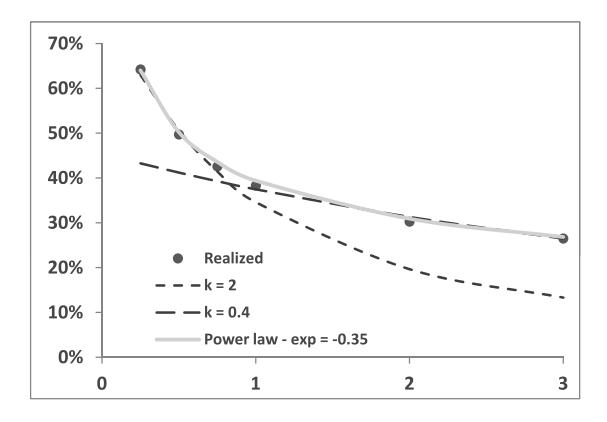
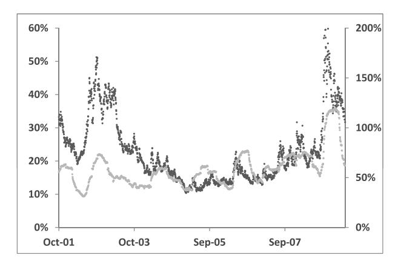
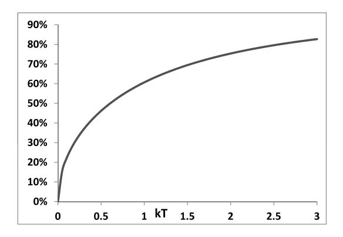
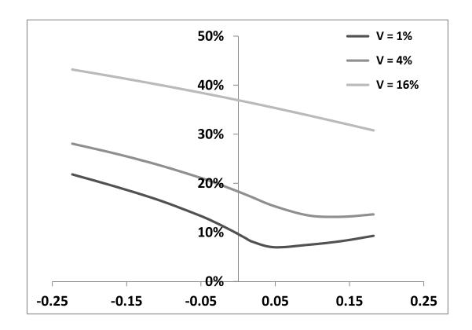
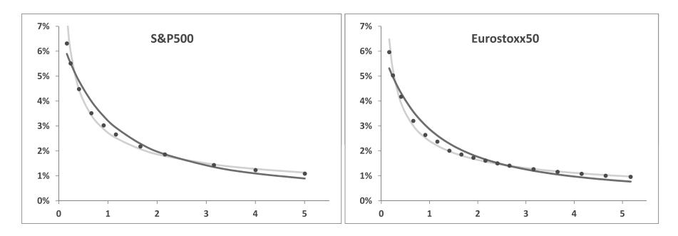
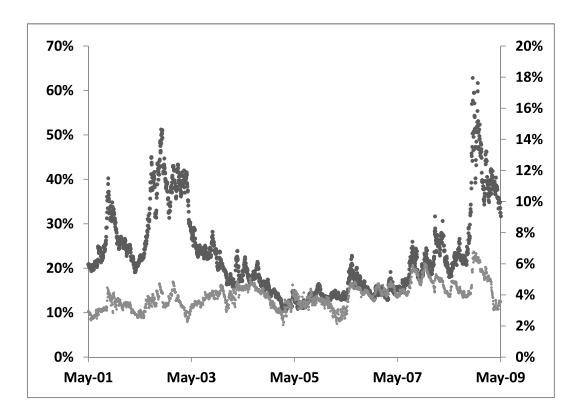

第六章：单因子动态的典型案例——Heston 模型
本笔记基于 Bergomi《Stochastic Volatility Modeling》第六章，按原书行文结构整理，兼顾数学推导的完整逻辑与交易实务视角。
目录
- Heston 模型的基本设定（§6.1）
- Heston 模型中的前向方差（§6.2）
- 第一代随机波动率模型中 $ 漂移项的本质（§6.3）
- Heston 模型中 VS 波动率的波动率期限结构（§6.4）
- 波动率的波动率的微笑（§6.5）
- Heston 模型的 ATMF 偏斜（§6.6）
- Heston 模型的局限与正确使用方式（§6.7）
- 端到端工作流算例
导言：Heston 模型在全书中的位置
第五章系统建立了方差互换（VS）的定价理论，揭示了 VS 价格与对数合约之间的等价关系，并证明前向方差是一类天然的市场变量。基于这一框架，第七章将构建直接以前向方差为状态变量的随机波动率模型——这类模型能够精确校准到任意期限结构的 VS 波动率曲面。
第六章在两者之间插入一个专题：以 Heston 模型为案例，说明第一代随机波动率模型（以瞬时方差为状态变量）在前向方差框架下的表现与局限。
Heston 模型在学术和实务中都享有极高知名度——它是第一个给出解析特征函数的随机波动率模型，因此欧式期权定价可以通过数值 Fourier 反演高效完成。然而，Bergomi 的分析视角不在于"如何用 Heston 定价欧式期权"，而在于：这个模型生成的现货/波动率联合动态，是否适合用于奇异期权的风险管理？
读完本章笔记，你将掌握以下能力：
- 将 Heston 动态改写为前向方差语言，理解其作为"前向方差单因子马尔可夫模型"的本质约束
- 推导 VS 波动率的波动率（vol of vol）期限结构，并与市场实现数据对比
- 在 （vol of vol 参数）一阶展开下推导 ATMF 偏斜的解析近似公式
- 识别 Heston 模型在短偏斜期限结构、vol of vol 与波动率水平依赖关系上的系统性偏差
- 理解为什么时间依赖的 Heston 参数设定在奇异期权定价中可能产生误导
1. Heston 模型的基本设定（§6.1）
研究动机
第五章结尾已经表明，方差互换的期限结构可以作为市场变量进行对冲，前向方差 是一类自然的随机变量。在进入第七章的前向方差模型之前，Bergomi 选择先分析 Heston 模型——因为它是最典型的第一代随机波动率模型，以瞬时方差 为状态变量建模，而非直接对前向方差建模。通过分析 Heston 模型的前向方差结构，我们将为第七章建立"适用性准则"。
1.1 模型动态（SDEs）
Heston 模型（Heston [60]，1993）用以下耦合 SDE 描述现货与瞬时方差的联合动态（零利率和红利率）：
其中：
- 是瞬时方差（即瞬时波动率的平方）
- 是均值回复速率， 是长期均值
- 称为"波动率的波动率"，但注意其量纲为 ，是正态而非对数正态意义下的 vol of vol
- 与 是相关布朗运动，， 对权益指数成立（负相关对应杠杆效应：价格下跌时波动率上升）
Heston 模型的核心优势： 的矩母函数有解析的 Laplace 变换形式，通过数值 Fourier 反演可以高效计算欧式期权价格（适用于无固定现金分红的情形）。这是它在学界和业界广泛流行的根本原因。
本章的分析重点不是这个解析定价结构，而是这套动态在前向方差框架下的行为。
2. Heston 模型中的前向方差（§6.2）
研究动机
§6.1 给出了 Heston 模型以瞬时方差为状态变量的 SDE 表达。然而，第五章已经说明前向方差 是方差互换的自然定价变量，且在市场模型框架下，前向方差才是可对冲的量。本节将 Heston 动态翻译到前向方差语言，揭示其隐含的结构约束——这一约束正是 Heston 模型无法精确校准到任意 VS 期限结构的根本原因。
2.1 前向方差的 SDE
由定义 ，对式（6.1）中 的 SDE 取期望，令 ，得到：
解为：
这说明Heston 模型中的前向方差 是当前瞬时方差 的指数衰减函数，以 为长期水平，衰减速率为 。
VS 波动率的期限结构由此给出：
对式（6.3）微分，得到前向方差的 SDE：
无漂移项——这是鞅性的必然要求（前向方差是风险中性测度下的鞅），无需额外论证。
2.2 前向方差语言下的 Heston 动态
将上述结果合并，Heston 动态在前向方差框架下可以写为：
这揭示了 Heston 模型的本质：它是一个前向方差的单因子马尔可夫模型——所有到期日 的前向方差 都是当前瞬时方差 的确定性函数（式 6.3），而瞬时方差的随机性来自唯一一个布朗运动 ，其瞬时波动率为 （随到期日远近指数衰减）。
2.3 初始条件的结构约束
Heston 模型的核心局限：式（6.5）成立的前提是前向方差的初始值满足：
即初始前向方差期限结构必须是一条以 为长期水平、以 为衰减速率的指数曲线，形如 。
真实市场的 VS 波动率期限结构通常更加复杂（可能有驼峰、多段不同斜率等），无法被一条指数曲线精确匹配。因此，Heston 模型最多只能精确校准到一个特定到期日的 VS 波动率，无法同时拟合整条期限结构。
这与第七章的前向方差模型形成鲜明对比——后者直接以 为状态变量建模，天然支持对任意 VS 期限结构的精确校准。
Heston 模型的前向方差地位：它是一个特殊的前向方差模型，但受制于 Markov-functional 的约束（ 是 的函数），这一约束等价于要求初始 VS 期限结构是指数形式。因此，它不是第七章一般前向方差模型的特例，而是一类更受限制的子类。
3. 第一代随机波动率模型中 漂移项的本质（§6.3）
研究动机
在学术文献和教科书中， 漂移项的设定通常借助"风险市场价格"（market price of risk）这一概念：先从历史测度写出漂移，再引入一个任意函数 将其修正为风险中性漂移。然而这套操作往往以" 为零或与漂移等形式"的假设草草了结。Bergomi 指出，这整套操作是一个伪问题。本节澄清 漂移的真正来源，这对理解 Heston 参数的经济含义至关重要。
3.1 漂移项的正确解读
本身是一个人工构造的量：不同时刻的 代表不同的前向方差。它的漂移只是前向方差期限结构斜率在短端的反映。
对恒等式 微分，利用前向方差的一般动态：
得到：
漂移项等于方差曲线短端的斜率，仅此而已。在 Heston 模型中，对式（6.3）关于 求导并令 ，正好还原出 ——这与"市场价格风险"毫无关系。
实务含义：在第一代随机波动率模型（SABR、Heston、Stein-Stein 等）中，关于"历史漂移"与"风险中性漂移"是否一致、"市场价格风险"应取何值的讨论，完全是无意义的形式主义。漂移项由初始前向方差期限结构的斜率唯一确定，而期限结构由市场 VS 报价决定。
4. Heston 模型中 VS 波动率的波动率期限结构（§6.4）
研究动机
§6.2 给出了 VS 波动率 的解析表达式（式 6.4）。一个自然的后续问题是： 本身的随机性有多大？它如何随到期日变化？ 这个问题决定了 Heston 模型能否匹配市场观察到的 vol of vol 期限结构——这是评估模型适用性的关键指标之一。
4.1 VS 波动率的 SDE
对式（6.4）关于 微分，利用 Itô 公式，得到 的 SDE：
其中 ，漂移项此处不关心（仅关注波动率部分）。
VS 波动率 的瞬时对数正态波动率（vol of vol）为：
4.2 两个极限情形
短期（，即剩余期限远短于均值回复时间尺度）：
vol of vol 趋近于常数 ，对平坦期限结构下近似为 。
长期（，即剩余期限远长于均值回复时间尺度）：
vol of vol 以 的速率衰减——均值回复的作用是将远期波动率"锁定"在 附近，随着到期日延长，波动率的不确定性越来越小。
4.3 与市场实现值的对比
图 6.1 显示了 Euro Stoxx 50 指数 VS 波动率的实现 vol of vol（点状图，2005–2010年）与 Heston 模型（式 6.9，两个不同 值的虚线）及幂律拟合（）的对比：

图 6.1：市场实现的 VS 波动率 vol of vol 随到期日的变化（点）、Heston 模型的两个 值拟合（虚线），以及幂律拟合 （实线）。
图中揭示了一个关键问题：Heston 模型无法用单一参数 同时匹配短端和长端的 vol of vol。 能较好地匹配短端（ 年），但在长端衰减过快； 能较好地匹配长端，但高估了短端。市场实现的 vol of vol 期限结构更接近幂律 ，而 Heston 模型的形式（式 6.9）在对数坐标下是 S 形的——中短端接近常数，长端才开始衰减——无法模拟这种跨量级的幂律行为。
此外，图中值得注意的一个事实：VS 波动率本身的 vol of vol 通常大于现货价格的波动率——这在图 6.2 的短期数据中也可以看到（左轴为 ATM 波动率，右轴为 vol of vol，右轴刻度值大于左轴同位置刻度值）。
5. 波动率的波动率的微笑（§6.5）
研究动机
§6.4 分析了 Heston 模型 vol of vol 期限结构的形状缺陷。本节从另一个维度考察：vol of vol 与当前波动率水平之间的关系是否合理？ 具体说，当市场处于高波动率环境时，vol of vol 是应该更高还是更低？这个问题对理解 Heston 模型适用于何种情形至关重要。
5.1 短期限下的正态 vol of vol
在扩散模型中，对于短到期期权，ATMF 隐含波动率近似等于当前瞬时波动率 。对 用 Itô 公式：
因此，Heston 模型的短期 ATMF 隐含波动率近似服从正态分布，正态波动率为 （与当前 水平无关）。
这与市场实际观察到的行为形成鲜明对比。图 6.2 展示了 Euro Stoxx 50 指数 3 个月期 ATMF 隐含波动率与其（对数正态）实现 vol of vol（6 个月滑动窗口）：

图 6.2：2001年10月至2009年5月，Euro Stoxx 50 指数 3 个月 ATMF 隐含波动率（深色，左轴）与其对数正态 vol of vol（浅色，右轴）。高波动率时期（2008年）与高 vol of vol 同时出现。
图中清晰显示：高波动率环境下，vol of vol 也更高——波动率与 vol of vol 呈正相关。这意味着短期隐含波动率的动态实际上更接近：
而 Heston 模型对短期限给出的是 （正态，vol of vol 不依赖波动率水平），与市场严重不符。
5.2 长期限下的地板效应
式（6.4）表明，由于 ，VS 波动率 有一个正的下界：
图 6.3 展示了 随 的变化：

图 6.3： 随 的变化。
地板效应的实务含义：前向 VS 波动率被限制在初始长期 VS 波动率 的某个分数之上。当 VS 波动率接近这个地板时，其进一步下行的空间消失，vol of vol 趋近于零。图中的地板比例并不小（例如 时约为 ），这意味着在低波动率环境下，Heston 模型会严重低估 vol of vol（因为 VS 波动率已经接近地板）。这一"地板效应"是 Heston 模型在低波动率期间定价 cliquet 和障碍期权时可能出现系统性偏差的根本原因之一。
6. Heston 模型的 ATMF 偏斜（§6.6）
研究动机
前几节分析了 Heston 模型 vol of vol 的期限结构缺陷。本节转向另一个核心诊断指标：ATMF 偏斜的解析近似。偏斜是期权曲面最敏感的特征量，直接决定了奇异期权（尤其是 cliquet）定价的核心风险敞口。通过在 （vol of vol 参数）一阶展开下推导 ATMF 偏斜，我们将精确量化 Heston 模型偏斜的期限结构形状——并在 §6.6.3 与市场实际数据对比，揭示其结构性不足。
6.1 vol of vol 一阶展开下的微笑（§6.6.1）
推导框架
Heston 模型是齐次的（homogeneous），因此隐含波动率不单独依赖现货和行权价，而只依赖两者之比（即 moneyness ）。以下取零利率和红利率简化记号（最终结果通过将 替换为 还原）。
Heston 模型的 PDE（式 6.10）：
零阶解： 时退化为确定性局部波动率模型
令 ， 变为确定性过程（ODE）：
此时 Heston 退化为时变确定性波动率的 Black-Scholes 模型，隐含波动率为：
零阶期权价格即为以 为参数的 BS 价格：
一阶扰动方程
将 （ 为 的一阶量）代入式（6.10），利用 满足 的方程，得到 满足的非齐次方程：
终止条件 。右端源项由 对 和 的混合偏导驱动——正是相关系数 与 vol of vol 的乘积产生了偏斜。
利用鞅性化简
的随机表示为：
其中上标 0 表示在 的 Black-Scholes 动态下取期望。
利用 BS 模型中 vega 与 dollar gamma 的关系（第五章式 5.66）：
以及 ，
再利用折现 dollar delta 的对数导数在 BS 模型下是鞅的性质，最终得到：
推导细节：在 BS 模型（时变确定性波动率）中， 是鞅。利用： 可将期望内的 还原到 时刻的量，从而提出积分号外。
关键观察：式（6.15）与第五章式（5.88）形式完全相同——在 一阶展开下扰动 vol of vol，等价于在固定前向方差条件下扰动三阶累积量（skewness）。这不是巧合：Heston 模型的前向方差期望值（式 6.2）不含 ，因此 的展开不改变前向方差，只改变三阶矩结构。
ATMF 偏斜的解析公式
将 转换为隐含波动率的扰动 ，利用 BS dollar gamma 的公式，并还原利率红利率（以 替换 ），得到：
其中 （VS 波动率）。
由此得到 ATMF 波动率和偏斜的一阶近似：
经济直觉：偏斜 正比于 （相关系数乘以 vol of vol），除以 （波动率和到期日的归一化）。积分 是瞬时方差沿期限加权的累积量——权重 在 远离 时（即 大时）趋于常数 ，在 接近 时趋于 ，对近期的权重更低。这反映了一个直觉：现货与波动率在接近到期时的协动，对偏斜的贡献更小（期权即将到期，协动产生的不对称性已无足够时间积累）。
6.2 短期与长期极限
短期（）：
短期偏斜趋于常数（不随期限变化），且与当前波动率水平 成反比——这是 Heston 模型的一个关键预测：波动率越高，偏斜越平坦。
长期（）：
长期偏斜以 速率衰减。原因： 均值回复，当 时， 的分布趋于与初始 无关——三阶累积量 正比于 ，偏度（skewness），代入偏斜-偏度关系得 。
6.3 数值算例（§6.6.2）
取典型指数微笑参数：，，，， 个月。
图 6.4 展示三种不同瞬时方差（，对应 ATMF 波动率约 10%、20%、40%）下的微笑截面：

图 6.4：Heston 模型中 个月微笑 随 的变化，，，，，三种 值。波动率水平越高，微笑偏斜越平坦，与式（6.18b）的 预测一致。
表 6.1：ATMF 偏斜的精确值与一阶近似（×10，表示 与 处隐含波动率之差）：
| 1% | 4% | 16% | |
|---|---|---|---|
| −8.1 | −6.0 | −3.1 | |
| −8.8 | −5.5 | −3.0 |
偏斜的一阶近似精度可接受（最大相对误差约 10%）。
表 6.2： 与 的精确值与近似值（单位：波动率点）：
| 1% | 4% | 16% | |
|---|---|---|---|
| 11.6 | 20.0 | 38.2 | |
| −1.9 | −1.7 | −1.2 | |
| −0.1 | −0.3 | −0.5 |
ATMF 波动率与 VS 波动率之差 的一阶近似严重低估实际值（近似值仅为真实值的 5%–40%）。原因：这一差值同样是 的一阶量，但其展开收敛性远差于偏斜——通常需要 的二阶展开才能达到可接受精度（详见第八章 §8.2）。
6.4 ATMF 偏斜的期限结构（§6.6.3）
对平坦 VS 期限结构（），式（6.17b）化简为：
图 6.5 展示了 Euro Stoxx 50 和 S&P 500 的实际 ATMF 偏斜期限结构，与幂律拟合（指数 0.55）及 Heston 模型公式（6.20，）的对比：

图 6.5：Euro Stoxx 50 和 S&P 500 的 ATMF 偏斜随到期日变化（2010年10月22日），幂律拟合（，浅线）及 Heston 公式（6.20，，深线）。
市场偏斜期限结构近似幂律 ，跨越从 1 个月到 5 年的宽广期限范围都保持这一规律。Heston 模型（式 6.20）在短期趋向常数（ 时 ），在长期以 衰减——两端都无法匹配幂律行为，拟合质量差。
根本原因在于 Heston 是单因子模型，内嵌了唯一一个时间尺度 ：短于 时偏斜接近常数，长于 时偏斜以 衰减。幂律行为则需要无穷多个时间尺度的叠加——这正是第七章多因子前向方差模型的优势所在。
6.5 ATMF 波动率与偏斜的关系（§6.6.4）
式（6.18b）预测短期偏斜与 ATMF 波动率成反比：。图 6.6 展示了 Euro Stoxx 50 的 ATM 波动率与 ATM 偏斜的实际历史数据：

图 6.6：Euro Stoxx 50 的 ATM 偏斜（浅色，右轴，定义为 95% 与 105% 行权价隐含波动率之差）与 ATM 波动率（深色，左轴），3 个月期。
数据显示：偏斜与波动率几乎独立变动，甚至呈正相关（高波动率时期偏斜也更大）——与 Heston 模型预测的负相关完全相反。
这揭示了 Heston 模型一个无法简单修补的结构性问题：只要使用 驱动波动率动态（式 6.1 第二行），短期正态 vol of vol 就不依赖波动率水平，进而偏斜必然与波动率负相关。要打破这一约束，需要将 SDE 改为：
即以对数正态方式驱动 （此时 ，短期偏斜变为 ，与波动率水平无关），这是第七章前向方差模型的基本设定之一。
7. Heston 模型的局限与正确使用方式（§6.7）
研究动机
前几节逐一检验了 Heston 模型在 vol of vol 期限结构、短期 vol of vol 的波动率水平依赖性、偏斜期限结构等方面与市场的偏差。本节综合这些分析，回答一个更根本的问题：Heston 模型的问题究竟在哪里，是否能通过参数时变化来修补？
7.1 灵活性不足是核心问题
Bergomi 指出，与 Heston 模型不符的不仅仅是历史实现动态，更根本的问题是模型缺乏足够的灵活性——某些风险敞口的对冲价格（bid/offer）可能与历史平均值不同，交易员需要能够独立设定这些价格，而不是被迫接受模型内生的约束。
一个具体的例子：假设现实中短期偏斜确实与 ATM 波动率近似成反比（与 Heston 预测一致）。但当你持有一个对前向 ATM 波动率/偏斜的交叉 Gamma 为正（）的奇异期权时，你可能出于保守原则，希望使用一个波动率与偏斜正相关或零相关的模型定价——而不是 Heston 的负相关假设。Heston 模型无法满足这一需求。
修复这一问题只需将 的 SDE 改为对数正态驱动（），即可使短期偏斜与 ATM 波动率水平解耦。
7.2 时间依赖参数的陷阱
一种常见的"补救"方案是令 Heston 参数 、、 随时间变化，以匹配市场的 VS 波动率期限结构或 ATMF 偏斜期限结构。Bergomi 对此持明确批评态度。
时变是合理的： 的作用等价于精确匹配 VS 波动率期限结构，而前向方差可以通过方差互换对冲，具有经济基础。
、 时变则值得警惕。考虑一个 call-spread cliquet，支付 ，其中 。该产品对前向偏斜 极度敏感。若允许 时变以匹配市场的 ATMF 偏斜期限结构，模型会给出：
这等于用今天的香草期权期限结构来决定未来的前向偏斜，并据此计算 cliquet 的对冲比率——以 和 的香草期权对冲前向偏斜风险。
问题在于：前向偏斜风险无法用香草期权对冲（详见第三章 §3.1.7 的实验）。既然不能对冲，就不应该让市场香草期权价格来决定前向偏斜的定价。更合理的做法是：主动选择一个交易员愿意承担的保守前向偏斜水平，而不是让校准机械地给出一个依赖于无关对冲工具的数字。
同样的逻辑适用于 vol of vol 风险：只有当我们能通过交易不同到期日的 cliquet 来对冲前向微笑风险时，才有理由让 或 时变以匹配市场隐含的前向偏斜期限结构。
7.3 Heston 模型的根本定位问题
Bergomi 最后提出了一个更深刻的批判：Heston 模型的问题不仅仅是灵活性不足或参数偶有偏差，更根本的是——哪个实际的定价或对冲问题自然地召唤出 SDE（6.5）这个形式？
以前向方差视角看，Heston 动态（6.5）是一个单因子马尔可夫模型，所有前向方差都由当前瞬时方差唯一确定。这意味着只要知道当前 ，整条前向方差曲线就完全确定——没有独立的曲线形变自由度。在需要对冲前向方差曲线形状变化的业务（如管理含 cliquet 的奇异期权账簿）中，这是一个根本性的结构缺陷，而非可以通过参数调整修复的技术问题。
对中国市场的参照：沪深 300 ETF 期权市场中，偏斜期限结构同样近似幂律衰减，与 Heston 的 长期行为不符（尚无公开的 A 股对应幂律指数数据，可通过历史偏斜期限结构估计）。更重要的是，国内雪球产品（autocall）本质上包含大量前向偏斜敞口——敲入观察日处的微笑形状直接决定了提前敲入情景下的再定价成本。用 Heston 模型（或时变参数 Heston）对此类产品定价，将以香草期权期限结构机械地决定前向偏斜，可能产生系统性定价偏差。
8. 本章要点总结
➊ 前向方差语言下的 Heston 动态
Heston 动态在前向方差框架下为：
约束条件：初始前向方差必须满足 ，即只能精确校准单一形状的 VS 期限结构。
VS 波动率有解析表达式 ，且有正的下界（地板效应）。
➋ 漂移项的正确理解
瞬时方差漂移 方差曲线短端斜率，与"市场价格风险"无关。"市场价格风险"是第一代随机波动率模型文献中的伪概念。
➌ vol of vol 期限结构
Heston 模型（平坦 VS 期限结构下）的对数正态 vol of vol：，短期趋于常数，长期以 衰减。市场实现的 vol of vol 期限结构更接近幂律 ，Heston 模型无法用单一 同时匹配短端和长端。
➍ ATMF 偏斜
一阶展开下的 ATMF 偏斜（平坦 VS 期限结构）：
短期趋于常数 ，长期以 衰减——均无法匹配市场幂律 。短期偏斜与 ATM 波动率成反比，与市场实际的正相关（或独立）现象相反。
➎ 时变参数的边界
时变化以匹配 VS 期限结构是合理的（因为前向方差可对冲）；、 时变化以匹配偏斜期限结构不合理——它将无法对冲的前向偏斜风险的定价权交给了香草期权市场。
9. 端到端工作流算例
以一个典型的**1年期×1年期远期起始看涨价差（call-spread cliquet）**为例，说明 Heston 模型在整个定价/风险管理链条中的表现与缺陷。
产品描述：在 年时起始，到 年时到期，支付：
该产品的价值几乎完全由 时刻观察到的 年期 ATMF 偏斜决定（对 ATM 波动率水平不敏感），是检验前向偏斜预测能力的典型产品。
步骤 1：市场数据与初始校准
做什么：从市场获取当前 VS 波动率期限结构和 ATMF 偏斜期限结构，校准 Heston 参数。
本章对应：§6.1（模型设定）、§6.2（VS 期限结构与参数约束）。
核心公式（VS 波动率，式 6.4）：
虚拟市场数据：
| 到期日 | 市场 VS 波动率 | ATMF 偏斜 |
|---|---|---|
| 3M | 20.0% | −4.0 vol pts / 10% moneyness |
| 6M | 19.5% | −3.2 |
| 1Y | 19.0% | −2.6 |
| 2Y | 18.5% | −2.0 |
由式（6.4），用 3M 和 2Y 两个锚点粗校准：
解 （令 ：，近似得 ）。
再由式（6.20）校准 ：取 年，（单位：vol pts per unit moneyness，即实际为 per unit ）：
得 。取 ，则 。
校准参数汇总：，，，，。
关键观察：Heston 模型只能用单一指数曲线匹配 VS 期限结构——4个数据点只能粗略拟合，实际市场可能存在明显残差。
步骤 2：计算 vol of vol 期限结构并与市场对比
做什么：用校准参数计算 Heston 模型的 vol of vol 期限结构，对比市场实现值，评估模型适用性。
本章对应：§6.4（式 6.9）、§6.5（地板效应）。
核心公式（平坦 VS 期限结构近似，式 6.9）：
代入参数（ 近似平坦，，）：
| 到期日 | Heston vol of vol | 市场实现（假设） | 偏差 |
|---|---|---|---|
| 3M | 28% | −12.1 pp | |
| 6M | 22% | −8.7 pp | |
| 1Y | 17% | −8.0 pp | |
| 2Y | 12% | −7.0 pp |
Heston 模型系统性低估 vol of vol，短端尤为突出。这意味着依赖 vol of vol 的奇异期权（cliquet、障碍等）在 Heston 模型下会被系统性低估。
地板水平（ 时）：，即约 ——当市场 1 年期 VS 波动率接近 14% 时，Heston 模型几乎失去了对 vol of vol 的预测能力。
步骤 3：计算前向偏斜与 cliquet 定价
做什么：计算 年时的前向偏斜（即 Heston 模型对未来 年期偏斜的预测），并据此计算 cliquet 价格。
本章对应：§6.6（式 6.18b，短期 ATMF 偏斜与 的关系）、§6.7（时变参数的限制）。
Heston 模型对 年后短期偏斜的预测：
由式（6.18b），在 时刻，对剩余期限 年：
Heston 模型中 是随机的，但均值为 。
| 情景 | 说明 | |||
|---|---|---|---|---|
| 低波动率 | 1% | 10% | 极大偏斜 | |
| 基准 | 3.48% | 18.7% | ||
| 高波动率 | 16% | 40% | 偏斜大幅收窄 |
关键观察：Heston 模型预测的前向偏斜强烈依赖于 时刻的波动率水平——低波动率环境下偏斜极大，高波动率时偏斜较平。这与市场实际情况（偏斜与波动率独立甚至正相关）相悖。
对 cliquet 定价的影响：
Call-spread cliquet 的价值约为 ，在平值附近主要取决于 ATMF 偏斜水平。以基准情景（偏斜 −0.451，约 −4.5 vol pts / 10% moneyness）和高波动率情景（偏斜 −0.210）计算的价格差异超过 30%——Heston 模型对 cliquet 价格的不确定性极大地来自 的不确定性，而非来自独立的偏斜参数。
步骤 4：识别对冲缺口
做什么：分析 cliquet 的 Greeks，识别 Heston 模型框架下无法对冲的风险。
本章对应：§6.7（前向偏斜不可对冲）。
在 Heston 模型中，cliquet 的主要 Greeks：
| Greeks | Heston 模型中的驱动变量 | 是否可对冲 |
|---|---|---|
| Delta（） | 现货 | ✅ 用现货对冲 |
| VS Vega（） | VS 波动率期限结构 | ✅ 用方差互换对冲 |
| 前向偏斜敏感性（） | （通过 ） | ⚠️ 仅间接通过 对冲 |
| -偏斜相关（cross-gamma） | ❌ 无对应市场工具 |
在 Heston 框架下，前向偏斜与 锁定，无法独立对冲。交易员被迫接受模型内生的"偏斜随波动率变化"假设，无法根据对前向偏斜的独立判断调整价格。这正是 Bergomi 说"哪个实际问题自然召唤出 SDE（6.5）形式"的核心所指。
步骤 5：替代方案与模型切换判断
做什么：在明确 Heston 局限后，判断是否需要切换到第七章的前向方差模型。
判断标准（对照本章 §6.7）：
| 问题场景 | Heston 模型 | 前向方差模型（第七章） |
|---|---|---|
| 欧式期权精确校准 | ⚠️ 只能近似（单指数 VS 结构） | ✅ 精确（任意期限结构） |
| vol of vol 期限结构匹配 | ❌ 单因子限制 | ✅ 可独立设定各期限 |
| 前向偏斜的独立控制 | ❌ 偏斜与 锁定 | ✅ 独立参数 |
| 偏斜/波动率相关结构 | ❌ 强制负相关 | ✅ 可自由设定 |
| Cliquet、障碍期权定价 | ❌ 结构性低估风险 | ✅ 可靠 |
| 解析定价（欧式期权） | ✅ Fourier 反演 | ❌ 一般需 MC |
结论：Heston 模型适用于以下有限场景：（1）只需处理欧式期权、且 VS 期限结构形状简单；（2）对前向偏斜敞口很小的短期奇异期权；（3）作为模型对比基准，而非生产定价模型。对于包含 cliquet、雪球（autocall）、长期障碍等产品的账簿，应直接使用第七章的前向方差模型。
工作流总结表
| 步骤 | 关键计算 | 本算例关键发现 | Heston 模型表现 |
|---|---|---|---|
| 1. 参数校准 | 式 6.4，VS 期限结构拟合 | 单指数曲线只能粗略匹配 4 期限数据 | ⚠️ 风险 |
| 2. vol of vol 诊断 | 式 6.9，与市场实现对比 | Heston 系统低估 vol of vol 40%–57% | ❌ 劣势 |
| 3. 前向偏斜预测 | 式 6.18b， | 偏斜与波动率强负相关，与市场相反 | ❌ 劣势 |
| 4. 对冲缺口识别 | 前向偏斜无独立工具 | 前向偏斜-波动率交叉 gamma 无法对冲 | ❌ 劣势 |
| 5. 模型适用性判断 | 综合评估 | cliquet 和雪球应切换前向方差模型 | ❌ 不适用 |
附：关键公式索引
| 编号 | 内容 | 核心作用 |
|---|---|---|
| (6.1) | Heston SDE（瞬时方差语言） | 模型定义 |
| (6.3) | 前向方差的指数结构 | Heston 前向方差的 Markov-functional 约束 |
| (6.4) | VS 波动率的解析表达式 | 期限结构校准 |
| (6.5) | Heston SDE（前向方差语言） | 揭示单因子结构 |
| (6.6) | 的 SDE | vol of vol 推导基础 |
| (6.9) | vol of vol 期限结构（平坦 VS） | 与市场对比的理论值 |
| (6.12) | 时 的确定性轨迹 | 零阶展开的基础 |
| (6.15) | 一阶扰动的期权价格修正 | ATMF 偏斜推导的核心步骤 |
| (6.16) | 隐含波动率的一阶修正 | 微笑形状的解析近似 |
| (6.17b) | ATMF 偏斜一阶近似 | 定量评估 Heston 偏斜水平 |
| (6.18b) | 短期 ATMF 偏斜 | 偏斜与波动率负相关的来源 |
| (6.19b) | 长期 ATMF 偏斜 | 长期偏斜的 衰减 |
| (6.20) | 平坦 VS 下的偏斜期限结构完整公式 | 与市场幂律对比的基准 |